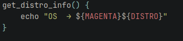

Fakefetch is like neofetch but made by me. The reason I made Fakefetch is because one day while going through the neofetch config I thought,
why don't I just made my own. So I did and overtime I have been updating it to my liking, I have even added some templates.
How does it work ?
Fakefetch uses commands from GNU/Linux terminal and commands from the lsb-release (Linux Standard Base)
to tell the user what they want about there computer, It does not have all the utilitys of neofetch but
I do plan to add more things over time but so far Fakefetch can do a variaty of things like:
What GNU/Linux system you are using
What GPU/CPU you have
What your Host name is and what your Username is
What your uptime on your computer is
What package manager you are using
I am planning on adding things like what window manager you are using, what your local/public IP is, how much battery you have for laptop users
and more, I will do my best to achive this in the future so stay tuned if you are intrested !
How to use Fakefetch
Step one
First thing you do want to do is clone Git repo. You can do this by using this command, git clone https://gitlab.com/Shipwreckt/fakefetch
This has to be in the home directory when you install it, you can delete the file when all this is done.
Step two
You want to cd into the file, so go to the location where the fakefetch file is and open it with your prefered text editor,
from there all you need to do is configure things to your liking there is documentasion below if you want to know more.
Also to test it you need to make it an active command so all you need to do for that is do chmod +x fakefetch.sh
but if you don't want too you can run ./setup.sh and boom! You can delete the fakefetch file now if you want too.
Step three
You are now done configuring Fakefetch now you want to make it a command that you can use anywhere, to do this is simple
you just need to run the setup script ./setup.sh and it will do all the work for you!
optinal steps
To make Fakefetch run whenever you open a terminal type echo "fakefetch.sh" >> ~/.bashrc and it should work.
Whenever you type fakefetch.sh it should come up in your terminal, also a note for now it does change all your
Terminal colours, I am working on fixing this so give it time !
What are the variables ?
Colours
So far the colours are vary mininal this is due to this origanally being my project for me only, to add more colours is simple
you need to declear a new variable and set a colour for it, don't worry it is not that hard for you do.
Here is a default colour that is in the list MAGENTA='\033[38;5;98m', this may look scary but it is just a quick change
All you need to change is the end bit 98m (keep the m) to a colour on this list https://www.ditig.com/publications/256-colors-cheat-sheet
An example would be GOLD='\033[38;5;220m' just choose whatever colours you want and mess around and see what you like.
From this point we are going to cover all the boaring variables so if you want to read on go ahead!
Username and Hostname
USERNAME=$(whoami) This decares a variable called USERNAME witch is used in the Fakefetch config to show what user is logged in
HOSTNAME=$(uname -n) This does the same thing as USERNAME but just for what your host name is for your computer
Distro
DISTRO=$(lsb_release -sd | sed 's/"//g') lsb_release -sd basically gives you the output "arch linux" or whatever GNU/Linux distro
you are currently using. The sed 's/"//g' removes all double quotes ("") from the output of lsb_release -sd.

This gets the output of DISTRO and basically displays it. Change the colour if you want it displayed diffrent.
The rest
The rest is basically the same, I don't suggest changing the main bits because it will probaby break it, I just suggest
Messing around with the colours and the ASCII art for the time being unless you know your bash then go ahead modify it to
your hearts content it is free and open sourse software at the end of the day !
How to change variable colours
As you can see there is a colour variable that being MAGENTA, if you wish to change the colour of the output change the
Variable name to a diffrent colour that you have defined beforehand.
Extra
Remember this is just a project I have done in my spare time and this is my first program to use bash so it might not be perfect
but I am doing my best!
Here is the source code if you wanna have a little look around
https://gitlab.com/Shipwreckt/fakefetch/